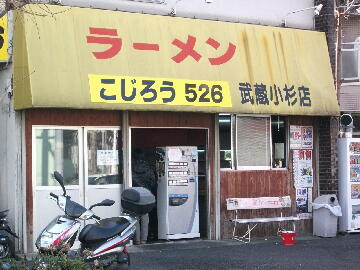
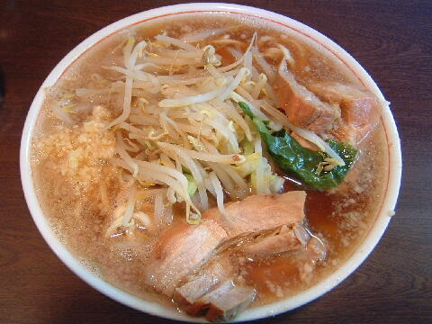

川崎市 中原区 上丸子山王町 1-1393
火
11：15〜14：00 17：00〜21：00

店員は、父親（現こじろう渋谷店主）から店を引き継いだ店主と助手。
黒コショウ（ギャバン）、トウガラシ。
レンゲ有。ティッシュ無。名刺無。
BGMは、FMラジオ。
トッピングは、二郎と同じ。
こじろう526は武蔵小杉以外にも数店支店がある。
旧 ラーメン二郎 武蔵小杉店
「ラーメン こじろう 武蔵小杉」でヤフー検索
「ラーメン こじろう 武蔵小杉」でヤフーリアルタイム検索
「ラーメン こじろう 武蔵小杉」でグーグル検索

ラーメン ニンニク 豚券
麺は、白くて、長くて、柔らかくて、真っ直ぐな麺。
ぶたは、ブレのあるバラ肉。
スープは、薄めであっさり。カラメ推奨。背脂がチャッチャッされる。
ヤサイは、ほとんどモヤシ。キャベツが少々。
ニンニクは、中粒に刻んだタイプ。
ＰＣ店